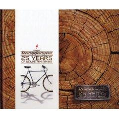
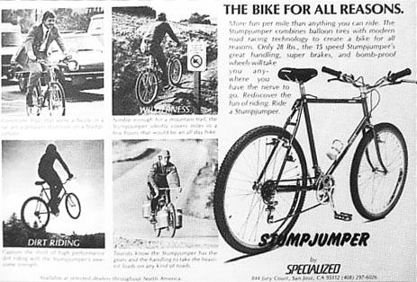
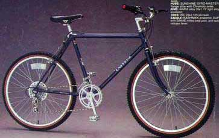

The big whoop about these bikes is
that they are considered historic, as the first production
mountain bikes. There's even an
'82
Stumpjumper in the Smithsonian.
These first-year Stumpjumpers seem fairly
well-documented. Some ads and brochures are up on this
page. There are excellent timelines and specs on the First Flight website. And
there's now a book called Stumpjumper: 25
years of Mountain Biking, by Mark
Reidy.

Most agree on this story about '82
Stumpjumpers: they were copied from 3 different
sizes of '81 Ritchey MountainBikes
brought by Mike Sinyard to Japan. The framesets were built
by Toyo, and there were only 500 bikes made from
10/81 through 1982. They cost $750, or half
of the price of a Ritchey. The wheels were built by
Wheelsmith but otherwise the bikes were imported as a loose
pile of parts in a box, which the shop would have to spend
hours assembling.
Part of what makes these interesting is that mountain
bikes preceded mountain bike parts. So these
came with stuff borrowed from BMX, French touring, and
motorcycles. Also there were some mini-generations of this
bike. The earliest (sometimes called 1981s) have
different decals and sometimes a cast fork crown before the
'biplane'-type appeared. And the latest '82 frames
are lugged.

Some other notable production bikes that year were the
Schwinn King
Sting and Univega Alpina Sport :



{kind=link}
{kind=link}
{kind=link}
{kind=link}
{kind=link}
{kind=link}
{kind=link}
{kind=link}
{kind=link}
{kind=link}
{kind=link}
{kind=link}
{kind=link}
{kind=link}
{kind=link}
{kind=link}
{kind=link}
{kind=link}
{kind=link}
{kind=link}
{kind=link}
{kind=link}
{kind=link}
{kind=link}